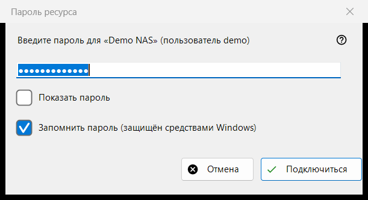
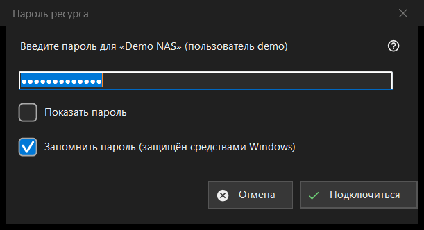

Пароль ресурса
Назначение
Запрашивает пароль сохранённого сервера или сетевой папки. Окно появляется, когда вы открываете ресурс без сохранённого пароля, когда сохранённый пароль отвергнут, когда пароль нужен для папки назначения на сервере или для импорта; для папки под PIN-кодом окно называется «PIN-код ресурса».


Порядок действий
- Введите пароль; он скрыт точками, а «Показать пароль» его показывает.
- Решите, оставлять ли отмеченным «Запомнить пароль (защищён средствами Windows)».
- Нажмите «Подключиться» (Enter) или «Отмена» (Esc), чтобы отказаться.
Элементы окна
Пароль
Запрос называет ресурс и пользователя. Пароль берётся в точности как набран, пробелы не отбрасываются. Пустое поле даёт «Введите пароль». «Показать пароль» вначале выключено.
Запомнить пароль
Флажок по умолчанию отмечен. Если он отмечен, пароль сохраняется в зашифрованном Windows виде для вашей учётной записи, причём только после того, как подключение с ним удалось; если нет - пароль живёт в памяти только до конца текущего запуска. Флажка нет там, где пароль всё равно сохраняется (например, при импорте файла настроек), и в режиме PIN-кода.
Отвергнутый пароль
Если сервер отверг предыдущий пароль, вверху появляется строка «Пароль не подошёл. Введите его ещё раз.», и окно спрашивает снова.
Режим PIN-кода
Для папки под PIN-кодом окно называется «PIN-код ресурса» и просит PIN-код указанного ресурса. Флажка «запомнить» нет, а отвергнутый PIN-код сопровождается строкой «PIN-код не подошёл. Введите его ещё раз.»